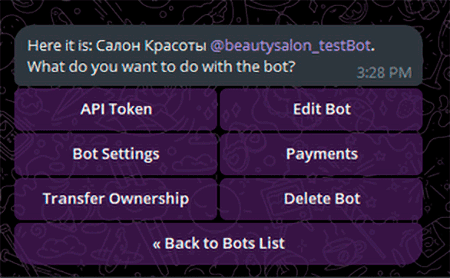

Чат-боты — это программы, которые имитируют разговор с пользователями через текстовые или голосовые интерфейсы. Они могут работать в мессенджерах, на веб-сайтах и в мобильных приложениях.
Преимущества чат-ботов в социальных сетях
Увеличение вовлеченности пользователей.
Автоматизация поддержки клиентов.
Сбор данных и аналитика.
Круглосуточная доступность.
Снижение затрат на обслуживание.
Применение чат-ботов в различных отраслях
Чат-боты находят применение в самых разных сферах:
Образование: Используются для предоставления информации о курсах, а также для проведения тестов и опросов.
Здравоохранение: Предоставляют пациентам информацию о медицинских услугах и записи на прием к врачу.
Финансовый сектор: Помогают пользователям управлять своими финансами и получать информацию о транзакциях.
Функциональность чат-ботов
Современные чат-боты обладают широкими возможностями:
Ответы на часто задаваемые вопросы: Быстрые и точные ответы на запросы пользователей.
Персонализированные рекомендации: Предложения на основе предпочтений и поведения пользователя.
Обработка платежей: Возможность совершения покупок прямо в чате.
Интеграция с другими сервисами: Подключение к CRM-системам, системам аналитики и другим инструментам.
Как создать чат-бота?
Следуйте этим шагам:
Определите цели и задачи.
Выберите платформу.
Разработайте сценарии общения.
Тестируйте и запускайте.
Создание собственного чат-бота не представляет собой сложной задачи, если у вас есть навыки программирования. В качестве альтернативы, вы можете заказать кастомного чат-бота у фрилансера за разумную цену. Чаще всего чат-ботов разрабатывают на Python, однако можно использовать и другие языки программирования, такие как Java, C++, Ruby и т.д. Если вы не знакомы ни с одним из этих языков, у вас есть два варианта: потратить время на их изучение или составить техническое задание и обратиться к программисту. Найти специалиста можно в интернете, через социальные сети, на биржах фрилансеров, в специализированных компаниях или по рекомендациям знакомых.
Инструкция по созданию чат-бота на Python:
1. Обратитесь к существующему боту в Telegram — BotFather.
2. Используйте команду /newbot, чтобы создать нового бота и придумайте название и имя пользователя (оно должно заканчиваться на ‘bot’).
3. BotFather пришлет вам токен вашего нового бота — скопируйте его.
4. Также вы можете сразу добавить аватар, описание и другие настройки через интерактивное меню BotFather.

Теперь нужно установить на компьютере необходимую библиотеку telebot (pyTelegramBotAPI). Для этого открываем командную строку и прописываем pip install pyTelegramBotAPI.
Затем переходим в любую среду для написания кода Python и импортируем эту библиотеку, а также, чтобы создавать разные объекты, нужно подключить модуль types. После этого создаём самого бота.
Добавляем приветствие после запуска и ещё одну команду, необходимую для работы без сбоев, после чего самый простой бот готов.
Для примера, создадим несложного бота для салона красоты. В его функционал будет входить просмотр необходимой о нём информации, а также запись на приём. Для этого создаем шаблон клавиатуры и несколько кнопок с помощью модуля types и добавляем эти кнопки в шаблон. Также повторим действия для кнопки «Назад».
Чтобы пользователь видел эту клавиатуру, нужно добавить параметр reply_markup в строку с выводом сообщения бота.
При нажатии на любую из кнопок пользователь автоматически отправляет сообщение с соответствующим текстом. Чтобы бот реагировал на такие сообщения, нужно добавить функцию, в которой программа просто проводит сравнения и исходя их них выводит нужный текст. В качестве клавиатуры ответа для всех кнопок, кроме «Записаться», выводим уже созданную «Назад».
Чтобы заказы после регистрации приходили лично вам, нужно создать группу и добавить в неё своего бота. После этого создаём новую функцию forward, которая будет пересылать сообщение пользователя к вам в группу и выводить некоторый текст. В параметр chat_id вставляем ссылку на группу с заказами.
После этого прописываем метод register_next_step_handler для того, чтобы бот подождал следующего сообщения пользователя и выполнил функцию forward.